Outline
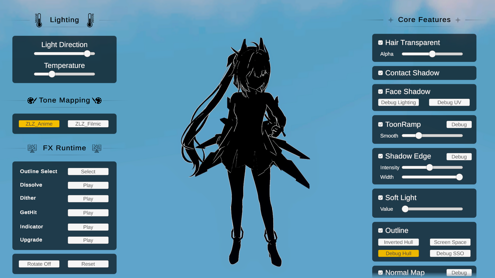
Shared (Hull & Screen Space)
Hull vs Screen Space
Two ways to draw the outline. Each makes a different kind of line:
| Inverted Hull | Screen Space Outline | |
|---|---|---|
| Draws | The character’s outer silhouette | Interior detail lines (creases, overlapping parts) |
| Built from | Extruded mesh geometry (per-object) | The character’s depth & normals (screen space) |
| Line weight | Follows the model and camera distance | Constant width in pixels on screen |
Setup
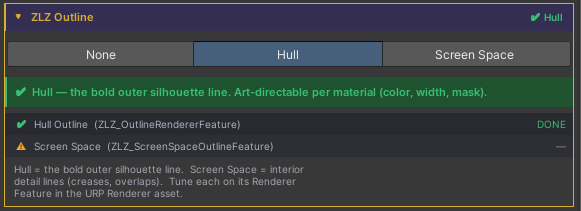
The outline is managed from one place: Character Dashboard > ZLZ Outline. Enable it there and choose the type (Inverted Hull or Screen Space); the Dashboard installs and configures everything for you, including filling in Character Layers when you pick Screen Space.
Where each type’s settings live
- Inverted Hull : on the character material (the Outline section)
- Screen Space : on its Renderer Feature in the Universal Renderer Data
Outline Mask
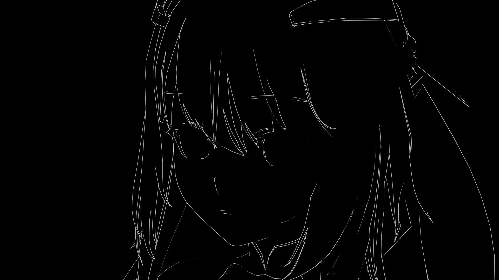
The Outline Mask lets you hide the outline on chosen parts of the character (the inside of the mouth, eyes, or small props) from one setting that drives both outline methods.
Because the outline is a core part of the shader, the Outline Mask is always available in the material’s Outline section. No other feature needs to be enabled first.
- Tick Use Mask and pick a channel from the Feature Mask system
- Paint the chosen channel:
- White (1) = show the outline
- Black (0) = hide the outline
- The same mask drives both methods, so you set it once
Selecting a channel automatically reveals the matching texture slot in the Mask Layout section, where you can pack it alongside other feature masks with the ZLZ Mask Packer.
Compare Inverted Hull vs Screen Space
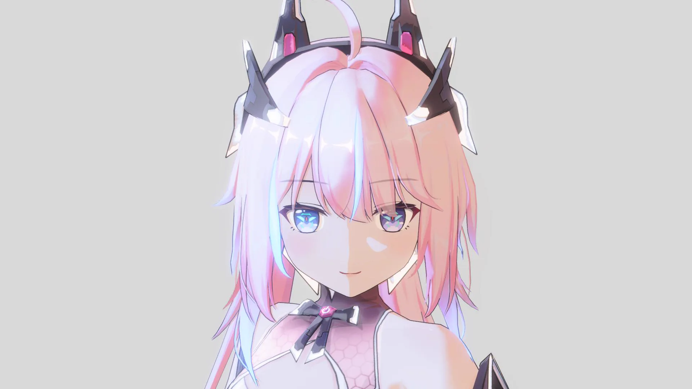
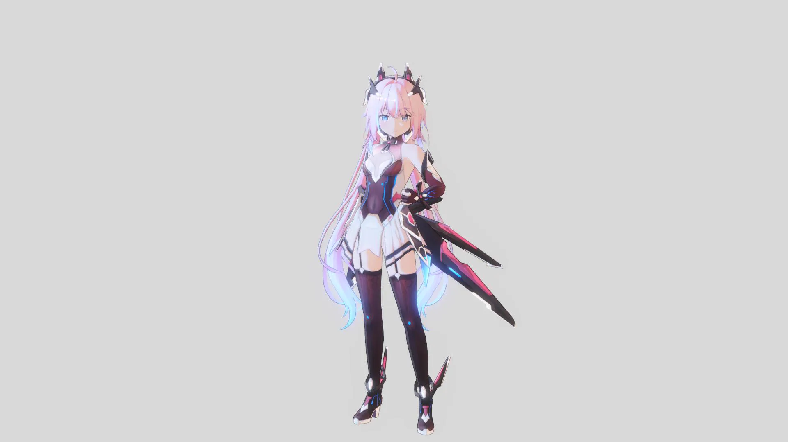
Inverted Hull Outline
The default outline. After running the Character Dashboard Setup it is enabled automatically.
ZLZ Smooth Normal Bake
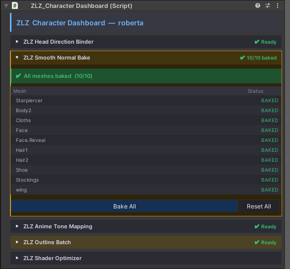
When installing the ZLZ_Character Dashboard, the system will automatically bake everything for you.
This helps make the outline smoother and cleaner, ensuring the highest outline quality.
If the mesh is updated later, simply press “Bake All” to rebake and finish the setup.
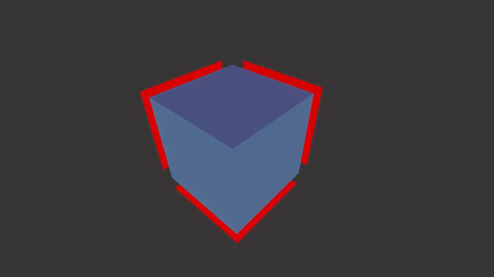
ZLZ Outline Batch
ZLZ Outline Batch automatically optimizes outline rendering by generating shared batching tags,
reducing unnecessary draw calls while preserving the original visual quality.
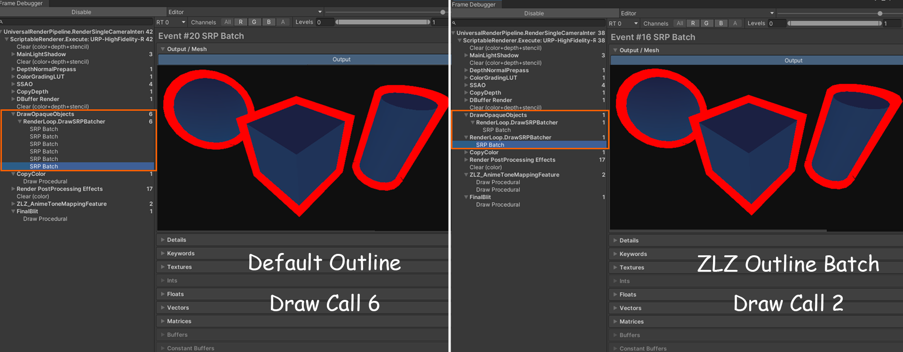
Parameters
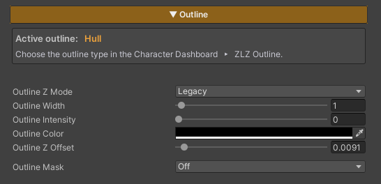
- Outline Z Mode : Provides two modes:
- Legacy : Allows the use of Outline Z Offset, but may cause issues with certain types of reflections
- Planar Safe : Resolves compatibility issues with some reflection types, but disables the use of Outline Z Offset
- Outline Width : Adjusts the thickness of the outline
- Outline Intensity : Controls the brightness of the outline (0 = black / 1 = uses the Base Color from the Main Texture)
- Outline Color : Directly sets the outline color
- Outline Z Offset : Adjusts the offset distance of the outline from the character surface, used to prevent z-fighting with the surface or to increase outline prominence
Example Outline Colors
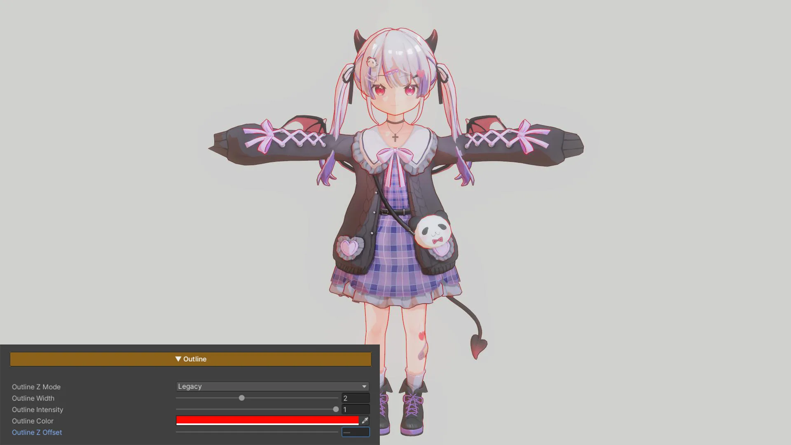
Example Z Offset
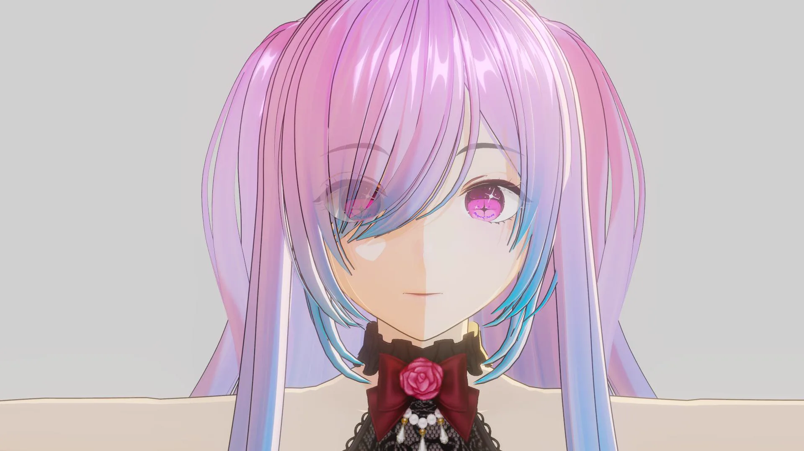
Screen Space Outline (SSO)
A URP Renderer Feature that draws outlines from the character’s depth and normals, without adding geometry.
The inverted hull handles the outer silhouette. Screen Space Outline adds the interior lines a hull can’t reach: folds in clothing, hair over the face, fingers, and layered armor.
Parameters
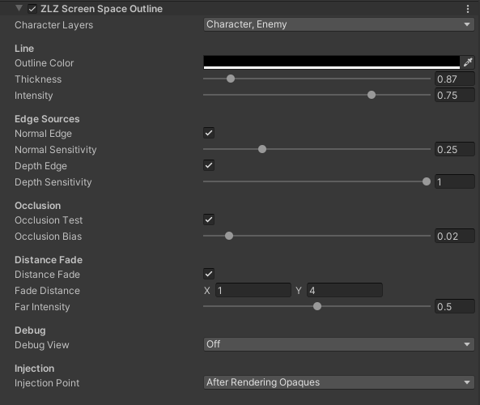
Layers
- Character Layers : Layers treated as characters. Only these get an outline. The Dashboard fills this in during Setup.
Line
- Outline Color : Line color
- Thickness : Line width in pixels (0.5 - 4). Stays consistent on screen at any distance
- Intensity : Line strength / alpha (0 = invisible / 1 = full)
Edge Sources
- Normal Edge : Lines where the surface bends sharply, like creases and folds
- Normal Sensitivity : higher = more edges
- Depth Edge : Lines where one part overlaps another, leaving a depth gap
- Depth Sensitivity : higher = catches smaller gaps
Occlusion
- Occlusion Test : Hides the line where the character is behind scene geometry
- Occlusion Bias : depth tolerance; only matters when partially occluded
Distance Fade
- Distance Fade : Fades the outline out with distance from the camera
- Fade Distance : in metres.
x= fade starts,y= fully faded - Far Intensity : strength at the far distance (0 = gone)
- Fade Distance : in metres.
Debug
- Debug View : Shows one channel full-screen to tune a slider. Keep Off for normal rendering.
- Coverage : the character area
- Normal Edge : edges from surface orientation
- Depth Edge : edges from depth gaps
- Combined Edge : both edge sources
- Distance Fade : how the line fades
- Occlusion : where the line is hidden
Injection (advanced)
- Injection Point : When the pass runs in the pipeline. After Rendering Opaques fits most projects; change only if needed.